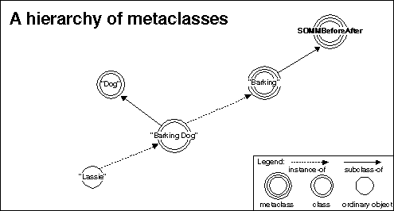

When there are two before/after metaclasses -"Barking" (as before) and "Fierce",
which has a sommBeforeMethod and sommAfterMethod that both
growl (that is, both methods make a "grrrr" sound when executed). The preceding
discussion demonstrated how to create a "FierceDog " or a "BarkingDog ",
but has not yet addressed the question of how to compose these properties
of fierce and barking. Composability means having the ability to
easily create either a "FierceBarkingDog" that goes "grrr woof woof grrr
" when it responds to a method call or a "BarkingFierceDog " that goes "woof
grrr grrr woof" when it responds to a method call.
Example for composition of before or after metaclasses.

There are several ways to express such compositions. Figure 1 depicts SOM IDL fragments for three techniques in which composition can be indicated by a programmer. These are denoted as Technique 1, Technique 2, and Technique 3, each of which creates a "FierceBarkingDog" class, named "FB-1", "FB-2", and "FB-3", respectively, as follows:
ÚÄÄÄÄÄÄÄÄÄÄÄÄÄÄÄÄÄÄÄÄÄÄÄÄÄÂÄÄÄÄÄÄÄÄÄÄÄÄÄÄÄÄÄÄÄÄÄÄÄÄÄÂÄÄÄÄÄÄÄÄÄÄÄÄÄÄÄÄÄÄÄÄÄÄÄÄÄ¿³TECHNIQUE 1 ³TECHNIQUE 2 ³TECHNIQUE 3 ³
ÃÄÄÄÄÄÄÄÄÄÄÄÄÄÄÄÄÄÄÄÄÄÄÄÄÄÅÄÄÄÄÄÄÄÄÄÄÄÄÄÄÄÄÄÄÄÄÄÄÄÄÄÅÄÄÄÄÄÄÄÄÄÄÄÄÄÄÄÄÄÄÄÄÄÄÄÄÄ´
³interface ³interface ³interface ³
ÃÄÄÄÄÄÄÄÄÄÄÄÄÄÄÄÄÄÄÄÄÄÄÄÄÄÅÄÄÄÄÄÄÄÄÄÄÄÄÄÄÄÄÄÄÄÄÄÄÄÄÄÅÄÄÄÄÄÄÄÄÄÄÄÄÄÄÄÄÄÄÄÄÄÄÄÄÄ´
³FB-1:Dog ³FB-2:FierceDog, ³FB-3:BarkingDog ³
ÃÄÄÄÄÄÄÄÄÄÄÄÄÄÄÄÄÄÄÄÄÄÄÄÄÄÅÄÄÄÄÄÄÄÄÄÄÄÄÄÄÄÄÄÄÄÄÄÄÄÄÄÅÄÄÄÄÄÄÄÄÄÄÄÄÄÄÄÄÄÄÄÄÄÄÄÄÄ´
³{ ³BarkingDog ³{ ³
ÃÄÄÄÄÄÄÄÄÄÄÄÄÄÄÄÄÄÄÄÄÄÄÄÄÄÅÄÄÄÄÄÄÄÄÄÄÄÄÄÄÄÄÄÄÄÄÄÄÄÄÄÅÄÄÄÄÄÄÄÄÄÄÄÄÄÄÄÄÄÄÄÄÄÄÄÄÄ´
³... ³{ ³... ³
ÃÄÄÄÄÄÄÄÄÄÄÄÄÄÄÄÄÄÄÄÄÄÄÄÄÄÅÄÄÄÄÄÄÄÄÄÄÄÄÄÄÄÄÄÄÄÄÄÄÄÄÄÅÄÄÄÄÄÄÄÄÄÄÄÄÄÄÄÄÄÄÄÄÄÄÄÄÄ´
³implementation ³... ³implemetation ³
ÃÄÄÄÄÄÄÄÄÄÄÄÄÄÄÄÄÄÄÄÄÄÄÄÄÄÅÄÄÄÄÄÄÄÄÄÄÄÄÄÄÄÄÄÄÄÄÄÄÄÄÄÅÄÄÄÄÄÄÄÄÄÄÄÄÄÄÄÄÄÄÄÄÄÄÄÄÄ´
³{ ³Implementation ³{ ³
ÃÄÄÄÄÄÄÄÄÄÄÄÄÄÄÄÄÄÄÄÄÄÄÄÄÄÅÄÄÄÄÄÄÄÄÄÄÄÄÄÄÄÄÄÄÄÄÄÄÄÄÄÅÄÄÄÄÄÄÄÄÄÄÄÄÄÄÄÄÄÄÄÄÄÄÄÄÄ´
³metaclass=FierceBarking; ³{ ³metaclass=Fierce; ³
ÃÄÄÄÄÄÄÄÄÄÄÄÄÄÄÄÄÄÄÄÄÄÄÄÄÄÅÄÄÄÄÄÄÄÄÄÄÄÄÄÄÄÄÄÄÄÄÄÄÄÄÄÅÄÄÄÄÄÄÄÄÄÄÄÄÄÄÄÄÄÄÄÄÄÄÄÄÄ´
³... ³ ... ³ ... ³
ÃÄÄÄÄÄÄÄÄÄÄÄÄÄÄÄÄÄÄÄÄÄÄÄÄÄÅÄÄÄÄÄÄÄÄÄÄÄÄÄÄÄÄÄÄÄÄÄÄÄÄÄÅÄÄÄÄÄÄÄÄÄÄÄÄÄÄÄÄÄÄÄÄÄÄÄÄÄ´
³ }; ³ }; ³ }; ³
ÃÄÄÄÄÄÄÄÄÄÄÄÄÄÄÄÄÄÄÄÄÄÄÄÄÄÅÄÄÄÄÄÄÄÄÄÄÄÄÄÄÄÄÄÄÄÄÄÄÄÄÄÅÄÄÄÄÄÄÄÄÄÄÄÄÄÄÄÄÄÄÄÄÄÄÄÄÄ´
³}; ³}; ³}; ³
ÀÄÄÄÄÄÄÄÄÄÄÄÄÄÄÄÄÄÄÄÄÄÄÄÄÄÁÄÄÄÄÄÄÄÄÄÄÄÄÄÄÄÄÄÄÄÄÄÄÄÄÄÁÄÄÄÄÄÄÄÄÄÄÄÄÄÄÄÄÄÄÄÄÄÄÄÄÄÙ
Figure 1.Three techniques for composing before/after metaclasses.
Note that the explicit metaclass in the SOM IDL of "FB-1" is its derived class, "FierceBarking". The derived metaclass of "FB-2" is also "FierceBarking". Lastly, the derived metaclass of "FB-3" is not the metaclass explicitly specified in the SOM IDL; rather, it too is "FierceBarking."